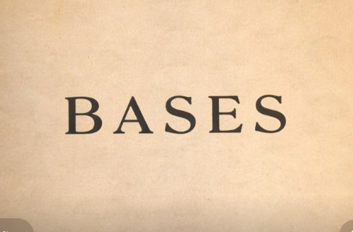
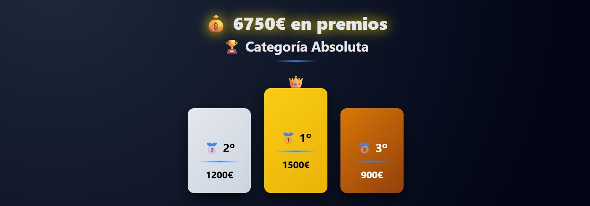
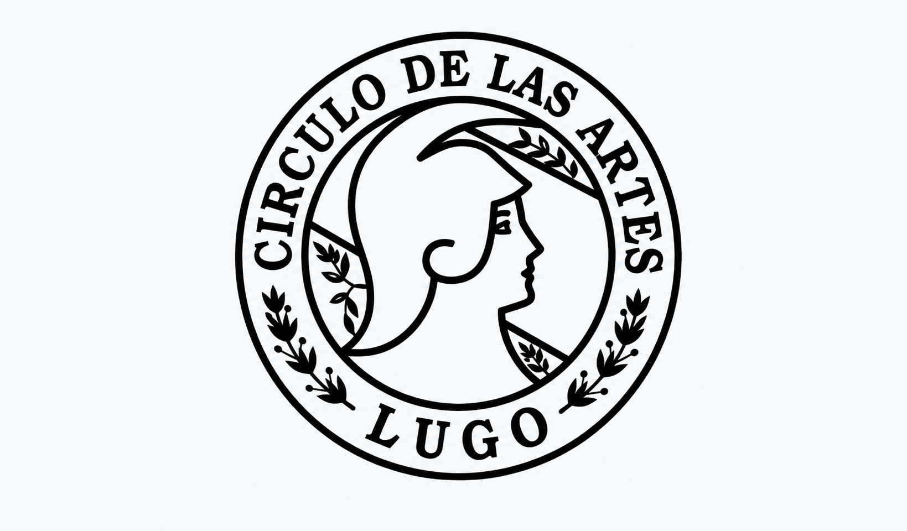

Open Internacional de Xadrez Fuxan Os Ventos
Lugo acollerá do 13 ao 20 de xullo de 2026 un torneo internacional pensado para xogadores, acompañantes e amantes do xadrez. Consulta toda a información sobre inscrición, bases, premios, calendario, aloxamento e sede de xogo.
Seguimento oficial do torneo
Inscrición aberta
Reserva xa a túa praza e asegura a túa participación nun dos grandes torneos de xadrez do verán en Lugo.
Bases do torneo
Consulta formato, ritmo de xogo, sistema de desempate, requisitos de participación e normativa oficial.


Premios destacados
Descubre a dotación económica e as distintas categorías de premios preparadas para esta edición.
Calendario de competición
Revisa as roldas, os horarios e a planificación completa do evento para organizar a túa participación.

Aloxamento para xogadores e acompañantes
Atopa opcións cómodas para a túa estancia en Lugo durante o torneo.
Sede e local de xogo
Coñece o espazo onde se celebrará o Open e prepara a túa visita con toda a información necesaria.
Turismo en Lugo e arredores

Segue o torneo nas redes sociais

Prepárate para unha experiencia inesquecible
Estamos preparando moitas novidades para facer deste Open de xadrez unha cita inolvidable.